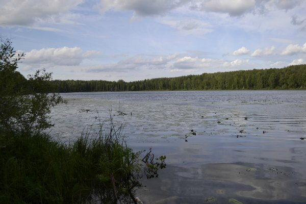

Озёра Омской области


Озеро Черталы
Расстояние от центра Омска - 222 км
Время в пути - 3 часа
Лучшее время для отдыха - зима, лето
Особенности - труднодоступность, хороший улов
Озеро Черталы, что в Тарским районе, хорошо известно рыбакам. Славится оно хорошими уловами и своей труднодоступностью. Основной транспорт летом – вертолет, танкетка, в последние годы трекол и квадроциклы. Идея этого похода не нова, уже многие годы Омские джиперы пытаются добраться до этого озера, но все безрезультатно, причинами этого являются многие факторы и поломка автомобилей в тяжелых дорожных условиях и реке Туй через которую нет моста, а ширина в разное время года может достигать нескольких сотен метров.
Дорога до Князевки омским джиперам знакома не по наслышке, Князевка уже давно стала своеобразной меккой для джиперов, многие едут туда испытать себя и своих боевых коней. Маршрут этот был первопроходом, у нас нету данных чтобы кто-то был на черталах на обычных внедорожниках летом.
Рыбалка здесь довольно своеобразная. Жители говорят, что на озере Черталы можно поймать больших размеров щуку, карпов и другие виды рыб
Озеро не может похвастаться своей флорой и фауной. Фауна озера Черталы в основном выражается в водной рыбе и наземно-воздушных птицах. Фауна выражена в степных и полустепных растениях такие как: ковыль, тонког гребенчатый, мятлик луговой, василёк синий и другие. Есть растения, которые встречаются намного реже и даже занесены в Красную книгу, например - касатик безлистный.